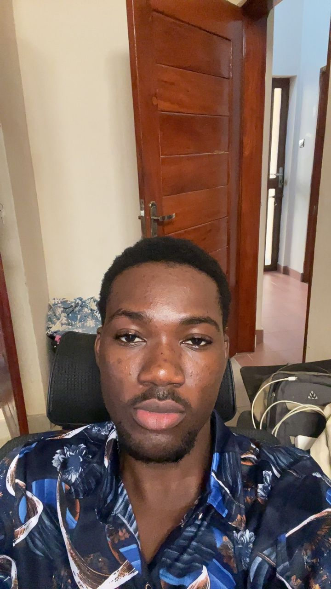
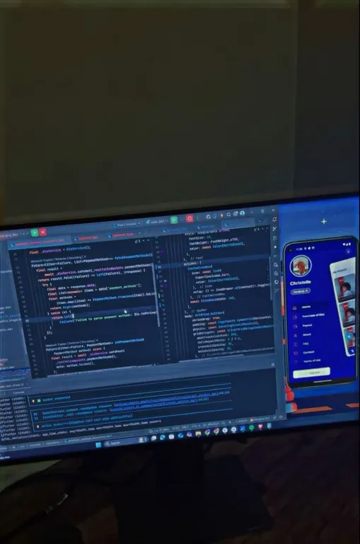
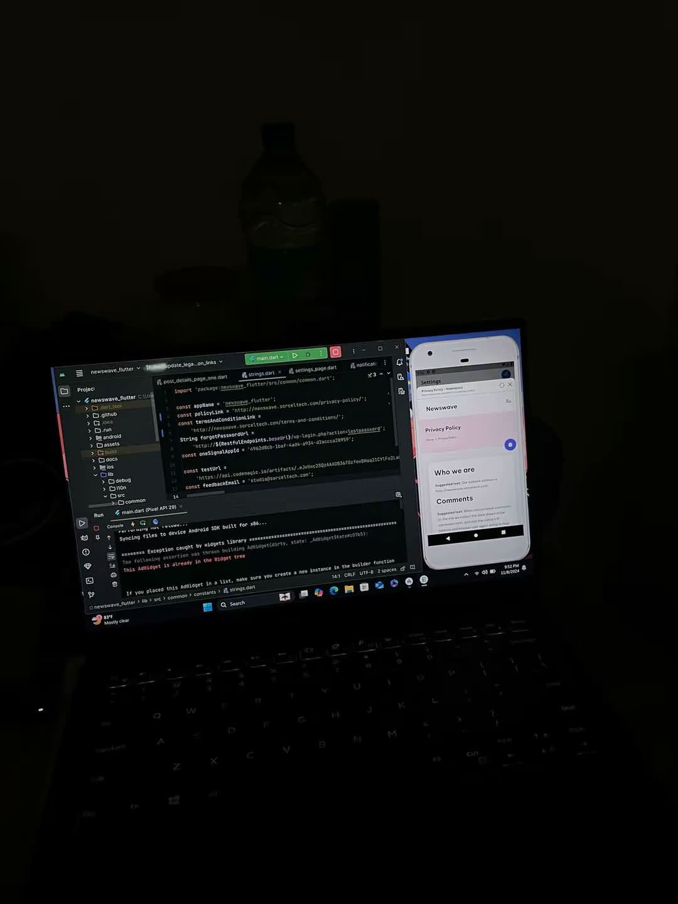
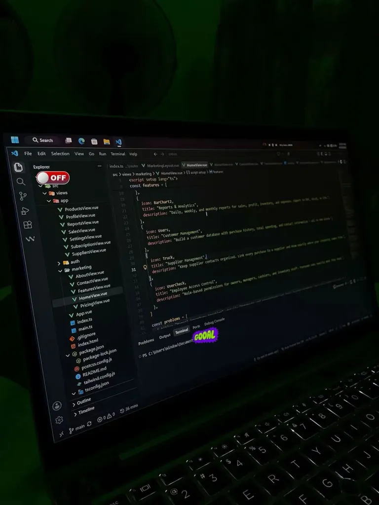
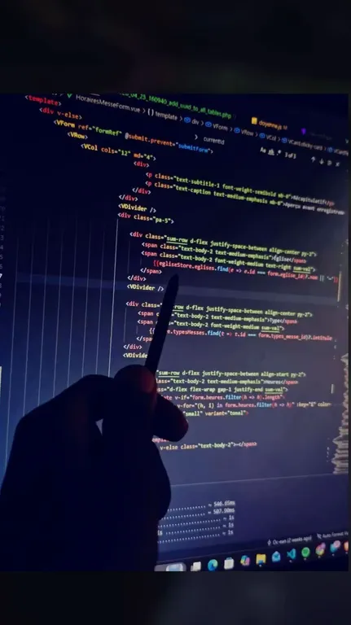

Mobile
Flutter · Dart · Android Studio
I’m a developer with 3+ years of experience building mobile and web applications with Flutter, Vue.js, and Laravel. I care about clean code, thoughtful interfaces, and solving real problems.

A little about me
I’m a full-stack developer who has contributed to production mobile apps, web platforms, and admin tools in distributed teams. I enjoy taking a feature from an idea to a reliable, user-friendly implementation.
My work has included AI-powered mobile features, realtime experiences, reusable UI components, and performance improvements. I’m always open to learning from others and taking on meaningful technical challenges.
The main tools I use to build and maintain web and mobile applications.
Flutter · Dart · Android Studio
Vue.js · TypeScript · HTML · CSS · Tailwind CSS
Laravel · PHP · PostgreSQL · Firebase · Supabase · REST APIs
BLoC · Provider · Riverpod · Pinia · Git · GitHub · Postman
Built frontend flows for a location-based dating app, including profile browsing, match discovery, and real-time chat interfaces. Worked with the backend team on location services and matching features.
Remote · ContractContributed to mobile app development and production improvements, integrated AI image-generation and audio-transcription APIs, and focused on architecture, performance, and user experience.
RemoteWorked on Vue.js, Inertia.js, and Laravel applications, created 20+ responsive components, and improved accessibility and maintainability.
On-siteHelped build mobile app features, integrated third-party APIs and Firebase, implemented reusable UI patterns, and collaborated with designers and other developers.
InbrandPr · SocialScan · Sorcel AI CompanionI have also contributed to client projects including LNB (Loterie Nationale du Benin) and WeZen.
A few examples of my work across web and mobile development.
A social journaling app for publishing anonymous or named entries, interacting through likes and comments, and receiving real-time notifications.
A physics-based game engine with custom collision detection, real-time puck physics, and game-state management using Pinia.
View projectA customer storefront and admin dashboard with inventory tracking and authentication, designed to cover both sides of an online store.
An invoicing management tool with billing workflows and one-click PDF export to help reduce manual work for small businesses.




For opportunities, collaboration, or a conversation about development, feel free to reach out.